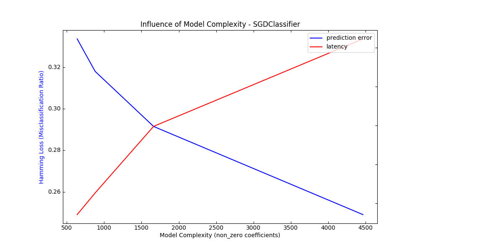
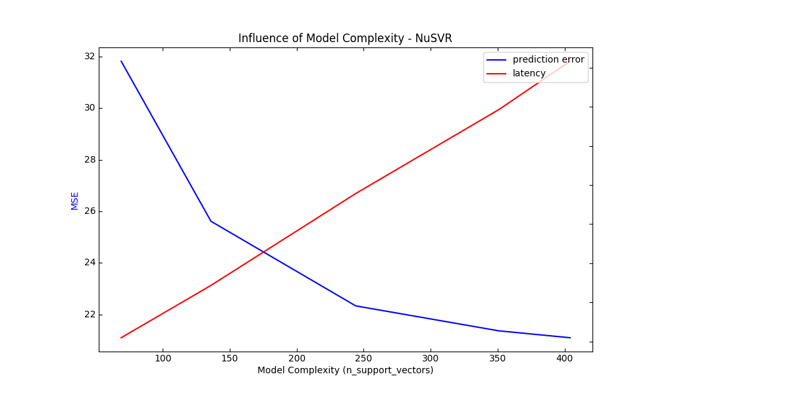
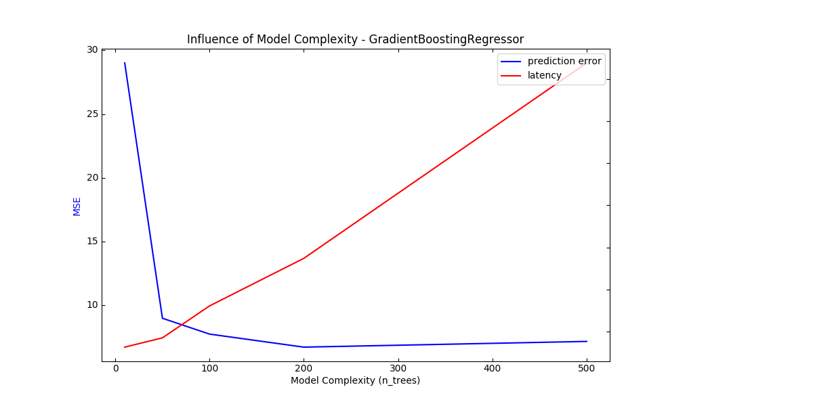

Note
Click here to download the full example code or run this example in your browser via Binder
Model Complexity Influence¶
Demonstrate how model complexity influences both prediction accuracy and computational performance.
The dataset is the Boston Housing dataset (resp. 20 Newsgroups) for regression (resp. classification).
For each class of models we make the model complexity vary through the choice of relevant model parameters and measure the influence on both computational performance (latency) and predictive power (MSE or Hamming Loss).
- 
- 
- 
Out:
Benchmarking SGDClassifier(alpha=0.001, l1_ratio=0.25, loss='modified_huber',
penalty='elasticnet')
Complexity: 4466 | Hamming Loss (Misclassification Ratio): 0.2491 | Pred. Time: 0.018569s
Benchmarking SGDClassifier(alpha=0.001, l1_ratio=0.5, loss='modified_huber',
penalty='elasticnet')
Complexity: 1663 | Hamming Loss (Misclassification Ratio): 0.2915 | Pred. Time: 0.015304s
Benchmarking SGDClassifier(alpha=0.001, l1_ratio=0.75, loss='modified_huber',
penalty='elasticnet')
Complexity: 880 | Hamming Loss (Misclassification Ratio): 0.3180 | Pred. Time: 0.011010s
Benchmarking SGDClassifier(alpha=0.001, l1_ratio=0.9, loss='modified_huber',
penalty='elasticnet')
Complexity: 639 | Hamming Loss (Misclassification Ratio): 0.3337 | Pred. Time: 0.009518s
Benchmarking NuSVR(C=1000.0, gamma=3.0517578125e-05, nu=0.1)
Complexity: 69 | MSE: 31.8139 | Pred. Time: 0.000215s
Benchmarking NuSVR(C=1000.0, gamma=3.0517578125e-05, nu=0.25)
Complexity: 136 | MSE: 25.6140 | Pred. Time: 0.000345s
Benchmarking NuSVR(C=1000.0, gamma=3.0517578125e-05)
Complexity: 244 | MSE: 22.3375 | Pred. Time: 0.000576s
Benchmarking NuSVR(C=1000.0, gamma=3.0517578125e-05, nu=0.75)
Complexity: 351 | MSE: 21.3688 | Pred. Time: 0.000838s
Benchmarking NuSVR(C=1000.0, gamma=3.0517578125e-05, nu=0.9)
Complexity: 404 | MSE: 21.1033 | Pred. Time: 0.000931s
Benchmarking GradientBoostingRegressor(n_estimators=10)
Complexity: 10 | MSE: 29.0148 | Pred. Time: 0.000232s
Benchmarking GradientBoostingRegressor(n_estimators=50)
Complexity: 50 | MSE: 8.9630 | Pred. Time: 0.000182s
Benchmarking GradientBoostingRegressor()
Complexity: 100 | MSE: 7.7187 | Pred. Time: 0.000247s
Benchmarking GradientBoostingRegressor(n_estimators=200)
Complexity: 200 | MSE: 6.6955 | Pred. Time: 0.000411s
Benchmarking GradientBoostingRegressor(n_estimators=500)
Complexity: 500 | MSE: 7.1437 | Pred. Time: 0.000870s
print(__doc__)
# Author: Eustache Diemert <eustache@diemert.fr>
# License: BSD 3 clause
import time
import numpy as np
import matplotlib.pyplot as plt
from mpl_toolkits.axes_grid1.parasite_axes import host_subplot
from mpl_toolkits.axisartist.axislines import Axes
from scipy.sparse.csr import csr_matrix
from sklearn import datasets
from sklearn.utils import shuffle
from sklearn.metrics import mean_squared_error
from sklearn.svm.classes import NuSVR
from sklearn.ensemble.gradient_boosting import GradientBoostingRegressor
from sklearn.linear_model.stochastic_gradient import SGDClassifier
from sklearn.metrics import hamming_loss
# #############################################################################
# Routines
# Initialize random generator
np.random.seed(0)
def generate_data(case, sparse=False):
"""Generate regression/classification data."""
if case == 'regression':
X, y = datasets.load_boston(return_X_y=True)
elif case == 'classification':
X, y = datasets.fetch_20newsgroups_vectorized(subset='all',
return_X_y=True)
X, y = shuffle(X, y)
offset = int(X.shape[0] * 0.8)
X_train, y_train = X[:offset], y[:offset]
X_test, y_test = X[offset:], y[offset:]
if sparse:
X_train = csr_matrix(X_train)
X_test = csr_matrix(X_test)
else:
X_train = np.array(X_train)
X_test = np.array(X_test)
y_test = np.array(y_test)
y_train = np.array(y_train)
data = {'X_train': X_train, 'X_test': X_test, 'y_train': y_train,
'y_test': y_test}
return data
def benchmark_influence(conf):
"""
Benchmark influence of :changing_param: on both MSE and latency.
"""
prediction_times = []
prediction_powers = []
complexities = []
for param_value in conf['changing_param_values']:
conf['tuned_params'][conf['changing_param']] = param_value
estimator = conf['estimator'](**conf['tuned_params'])
print("Benchmarking %s" % estimator)
estimator.fit(conf['data']['X_train'], conf['data']['y_train'])
conf['postfit_hook'](estimator)
complexity = conf['complexity_computer'](estimator)
complexities.append(complexity)
start_time = time.time()
for _ in range(conf['n_samples']):
y_pred = estimator.predict(conf['data']['X_test'])
elapsed_time = (time.time() - start_time) / float(conf['n_samples'])
prediction_times.append(elapsed_time)
pred_score = conf['prediction_performance_computer'](
conf['data']['y_test'], y_pred)
prediction_powers.append(pred_score)
print("Complexity: %d | %s: %.4f | Pred. Time: %fs\n" % (
complexity, conf['prediction_performance_label'], pred_score,
elapsed_time))
return prediction_powers, prediction_times, complexities
def plot_influence(conf, mse_values, prediction_times, complexities):
"""
Plot influence of model complexity on both accuracy and latency.
"""
plt.figure(figsize=(12, 6))
host = host_subplot(111, axes_class=Axes)
plt.subplots_adjust(right=0.75)
par1 = host.twinx()
host.set_xlabel('Model Complexity (%s)' % conf['complexity_label'])
y1_label = conf['prediction_performance_label']
y2_label = "Time (s)"
host.set_ylabel(y1_label)
par1.set_ylabel(y2_label)
p1, = host.plot(complexities, mse_values, 'b-', label="prediction error")
p2, = par1.plot(complexities, prediction_times, 'r-',
label="latency")
host.legend(loc='upper right')
host.axis["left"].label.set_color(p1.get_color())
par1.axis["right"].label.set_color(p2.get_color())
plt.title('Influence of Model Complexity - %s' % conf['estimator'].__name__)
plt.show()
def _count_nonzero_coefficients(estimator):
a = estimator.coef_.toarray()
return np.count_nonzero(a)
# #############################################################################
# Main code
regression_data = generate_data('regression')
classification_data = generate_data('classification', sparse=True)
configurations = [
{'estimator': SGDClassifier,
'tuned_params': {'penalty': 'elasticnet', 'alpha': 0.001, 'loss':
'modified_huber', 'fit_intercept': True, 'tol': 1e-3},
'changing_param': 'l1_ratio',
'changing_param_values': [0.25, 0.5, 0.75, 0.9],
'complexity_label': 'non_zero coefficients',
'complexity_computer': _count_nonzero_coefficients,
'prediction_performance_computer': hamming_loss,
'prediction_performance_label': 'Hamming Loss (Misclassification Ratio)',
'postfit_hook': lambda x: x.sparsify(),
'data': classification_data,
'n_samples': 30},
{'estimator': NuSVR,
'tuned_params': {'C': 1e3, 'gamma': 2 ** -15},
'changing_param': 'nu',
'changing_param_values': [0.1, 0.25, 0.5, 0.75, 0.9],
'complexity_label': 'n_support_vectors',
'complexity_computer': lambda x: len(x.support_vectors_),
'data': regression_data,
'postfit_hook': lambda x: x,
'prediction_performance_computer': mean_squared_error,
'prediction_performance_label': 'MSE',
'n_samples': 30},
{'estimator': GradientBoostingRegressor,
'tuned_params': {'loss': 'ls'},
'changing_param': 'n_estimators',
'changing_param_values': [10, 50, 100, 200, 500],
'complexity_label': 'n_trees',
'complexity_computer': lambda x: x.n_estimators,
'data': regression_data,
'postfit_hook': lambda x: x,
'prediction_performance_computer': mean_squared_error,
'prediction_performance_label': 'MSE',
'n_samples': 30},
]
for conf in configurations:
prediction_performances, prediction_times, complexities = \
benchmark_influence(conf)
plot_influence(conf, prediction_performances, prediction_times,
complexities)
Total running time of the script: ( 0 minutes 18.023 seconds)